За да изберете своята желана къща кликнете ТУК.
| НАЛИЧНИ КЪЩИ | |||||||
|---|---|---|---|---|---|---|---|
| Местоположение | Квадратура(кв.метри) | Двор | Гараж | Етажи | Цена(лева/евро) | Описание | Снимка |
| с. Николово | 100 кв.м | Има | - | 2 | 87000 € | Разпредлението е както следва:
Първи етаж:
-Входно Г- образно антре;
-Всекидневна;
-Мокро помещение;
-Баня с тоалетна;
Втори етаж
-Две спални помещения с голяма двойна тераса ;
-Помещение подходящо за килер или втора баня с тоалетна;
-Избено помещение
-Таван тип мансарда с височина (2.50 м) има възможност да се преобразува в прекрасна спалня с гледка към цялото село
Телефон за връзка: +359 89 *** **** |
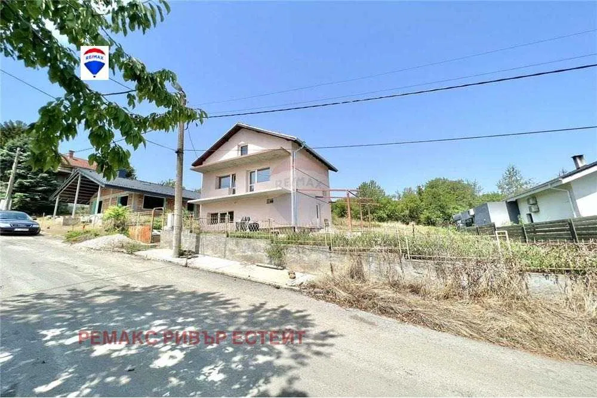 |
| гр. Варна (първи) | 50 кв.м | Има | - | 1 | 33000 € | Къщата има двор в който може да се паркира, прекрасна гледка към морето, сред тишина и спокойствие, с видео наблюдение. Разпределение на имота: Дневна с кухненски бокс, спалня, баня, голяма терраса. Има зона за барбекю.
Телефон за връзка: +359 89 *** **** |
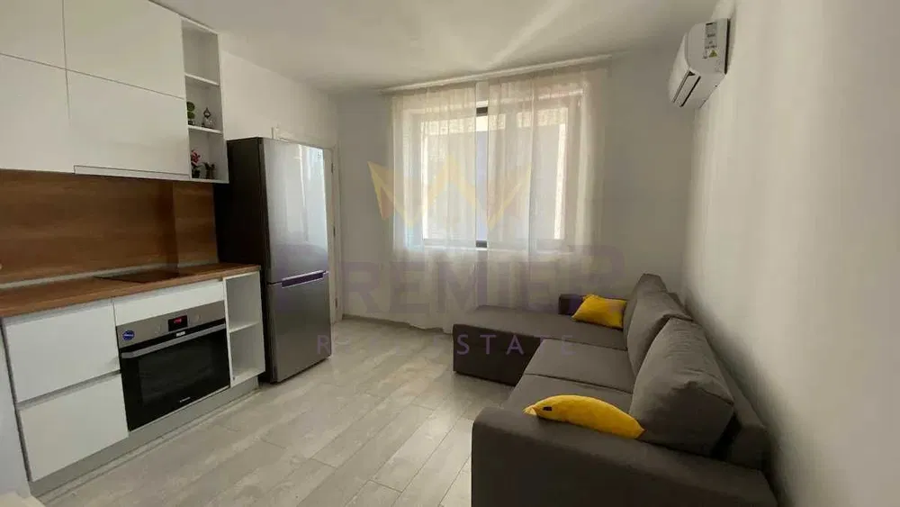 |
| гр. Казанлък | 200 кв.м | Има | - | 2 | 127823 € | допълнителни постройки - барбекю и малка стара къща
Поливна система за двора, сонда и хидрофор
Изолация -външна на къщата.
Телефон за връзка: +359 89 *** **** |
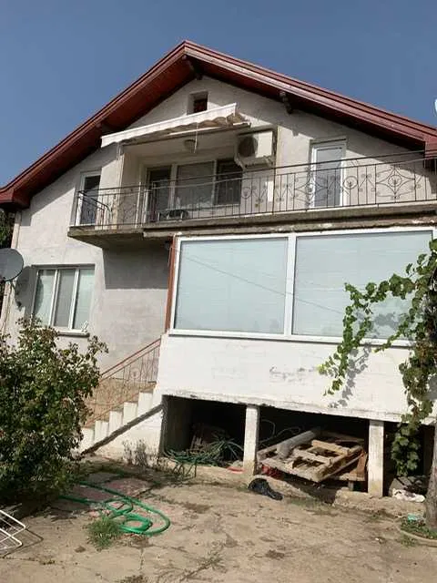 |
| с. Селянин | 650 кв.м | Има | - | 1 | 68000 € | Къщата е с 3 стаи, хол и две спални.
Постройката до нея е с вътрешно барбекю, кухненски бокс, баня с тоалетна.
Телефон за връзка: +359 89 *** **** |
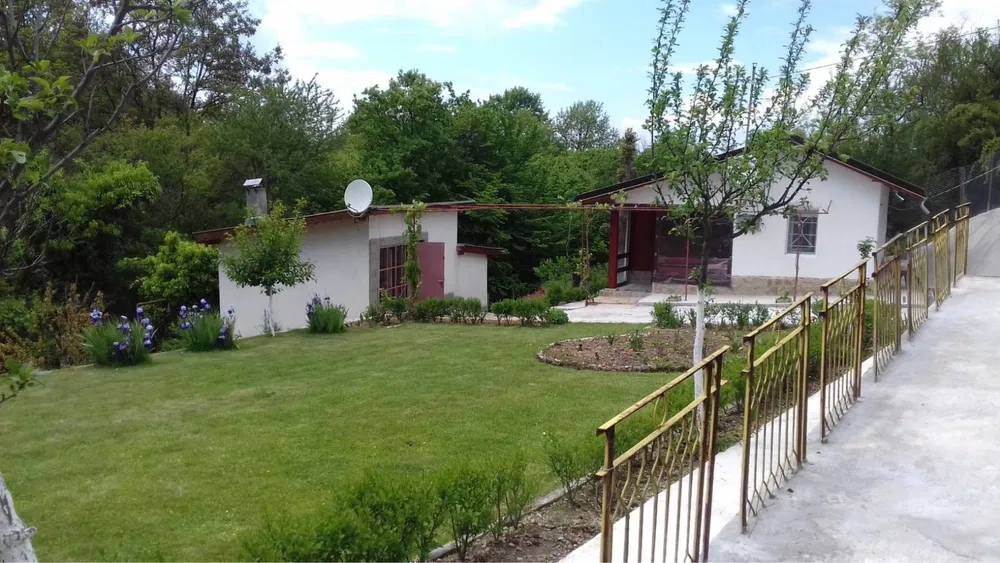 |
| с. Буковец | 150 кв.м | Има | - | 2 | 23008 € | Къщата е с РЗП от 150 кв.м и има следното разпределение: първи етаж - две стаи и две избени помещения; Втори етаж, до който се стига посредством вътрешни стълби, се състои от коридор и четири стаи. Сградата има нужда от осъвременяване, покриват наскоро е ремонтиран в имота има партиди за ток и вода, а в пристройка до къщата е разположена лятна кухня. Дворът е с големина от 2000 кв.м, с лека денивелация, в него са поместени стопански постройки, навес и баня. Достъпът до имота е по асфалтов път. Селото е тихо и спокойно, подходящо за разпускане от шумната градска атмосфера.
Телефон за връзка: +359 89 *** **** |
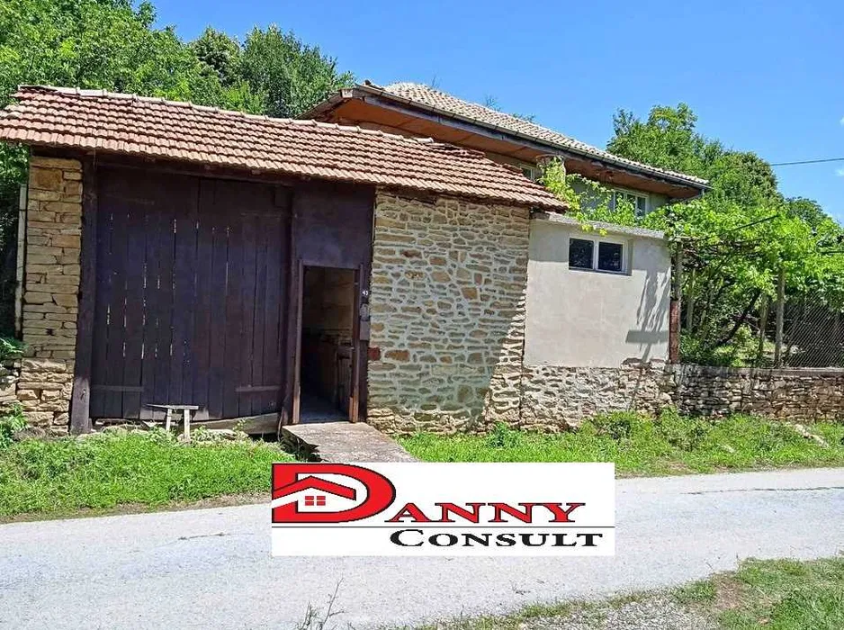 |
| с. Понор | 84 кв.м | Има | - | 2 | 74137 € | Продава се къща 84 квадрата на 30 минути от София в с. Понор, Двор 667 м2, перфектен асфалтов път до входната врата, санирана цялостно с 10 см изолация, масивни метални врати, пвц дограми, къщата е на плоча , ламинат, плочки и шпакловки с боя. Водата е от резервоар 3 тона с хидрофор, зарежда го местен от центъра на селото и е платена за една година напред, Това е временно докато се финансира подмяната на старият водопровод, има възможност и за сонда.
Телефон за връзка: +359 89 *** **** |
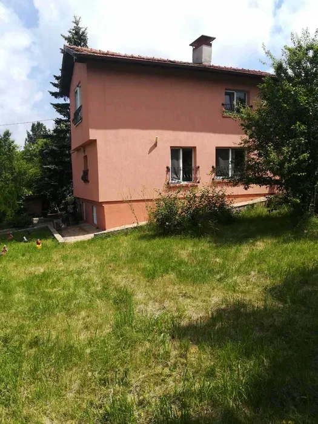 |
| с. Брестовица | 80 кв.м | Има | - | 2 | 31500 € | На 17 километра от град Бяла и на 40 километра от град Русе е разположена една прекрасна къща в битов стил. Двор с площ от 1020 квадратни метра, равен, без денивелация, в тиха пресечна улица на главния път. Къщата е със следното разпределение:
Първи етаж: кухня с трапезария; спалня; баня и тоалетна отделно; складово помещение.
Втори етаж: хол; спалня; веранда с панорамна гледка; втора спалня; детска стая;
Къщата е разделена на стара и нова част, като на достроената част е излята плоча между етажите, отделени са санитарните възли, сменена е дограмата на втория етаж, холовата част и верандата са подковани с ламперия.
Разполага с голям навес подходяща за паркиране на 2 автомобила, както и допълнителни складови помещения подходящи за изба или работилница. Покривът е изцяло ревизиран преди 4 години и към момента е безупречен. Монтирано видеонаблюдение.
Телефон за връзка: +359 89 *** **** |
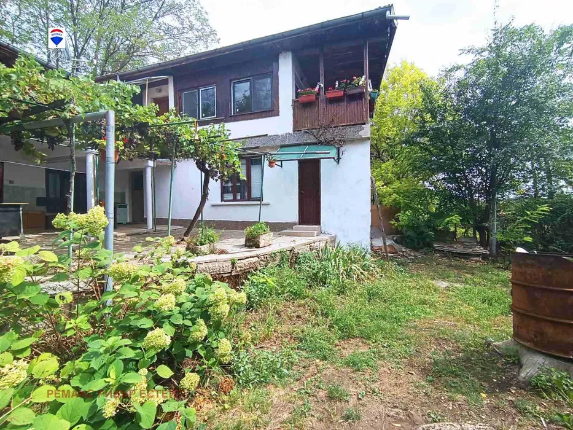 |
| с.Соколица | 145 кв.м | Има | - | 1 | 127900 € | Нова къща с.Соколица, община Карлово със самостоятелен двор 1170м2.Проектирана с много нежна и фина архитектурна линия и висок клас материали. Невероятна панорама към Стара планина.Състои се от: просторна кухня, всекидневна и хол. Две санитарни помещения, три спални, предверие и стилна просторна веранда.
Телефон за връзка: +359 89 *** **** |
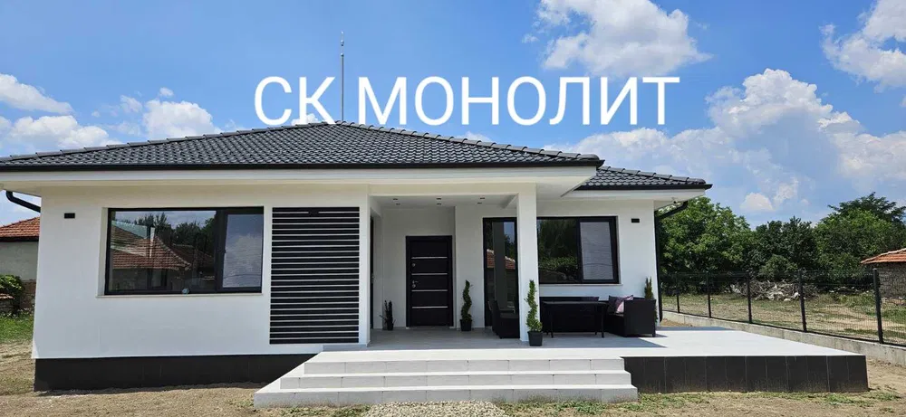 |
| гр. Ловеч | 100 кв.м | Има | Има | 3 | 48573 € | Продавам Мезонет в къща, на 2ри и 3ти етаж. Състои се от 6 стаи и баня с тоалетна. Отделно има гараж, стая, баня и две мази. Имотът, разполага с двор.
Телефон за връзка: +359 89 *** **** |
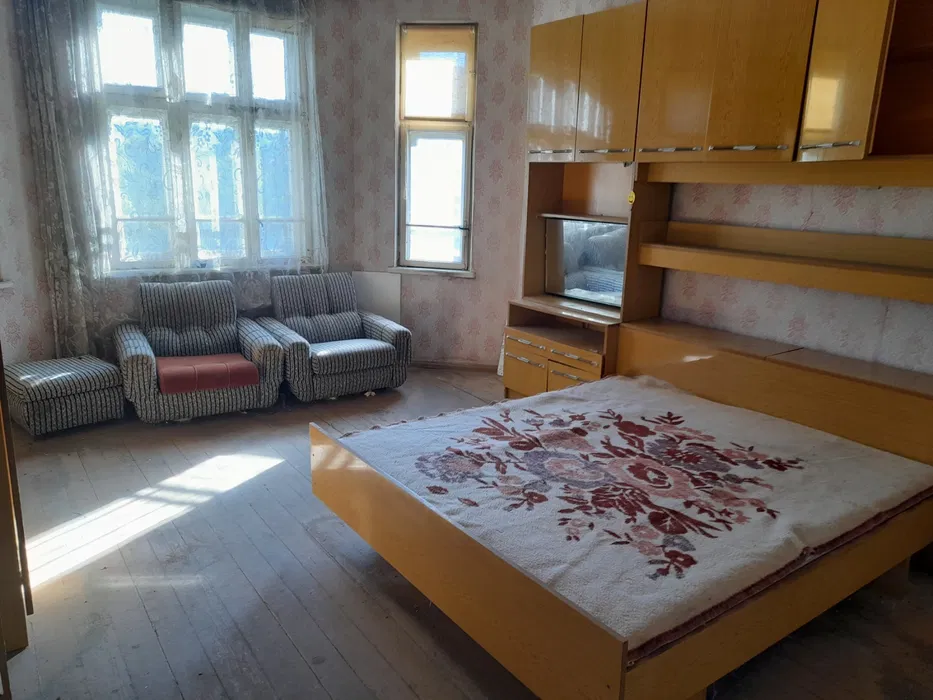 |
| гр. Варна (втори) | 50 кв.м | - | - | 1 | Къщата има двор в който може да се паркира, прекрасна гледка към морето, сред тишина и спокойствие, с видео наблюдение. Разпределение на имота: Дневна с кухненски бокс, спалня, баня, голяма терраса. Има зона за барбекю.
Телефон за връзка: +359 89 *** **** |
||
| с.Софрониево | 120 кв.м | Има | - | 1 | 5113 € | Къщата разполага с 4 стаи+допълнителна къща състояща се от стая и кухня.Имота се състои от два парцела описани в нот.акт,и може да се раздели.Готови документи за продажба.
Телефон за връзка: +359 89 *** **** |
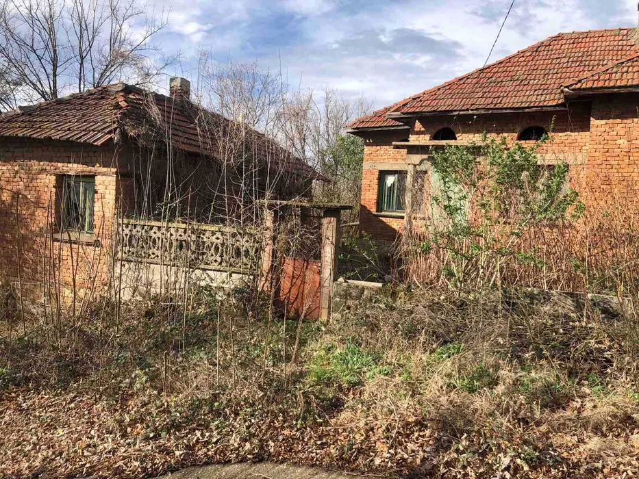 |
| с. Еремия, Кюстендил | 1700 кв.м | Има | - | 3 | 35790 € | Къща на три етажа около 100квадрата на етаж и дворно пространство над 1декар!Един собственик с документи!
Телефон за връзка: +359 89 *** **** |
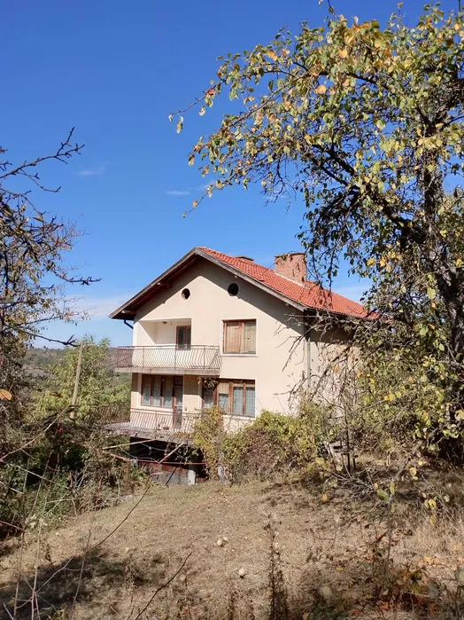 |